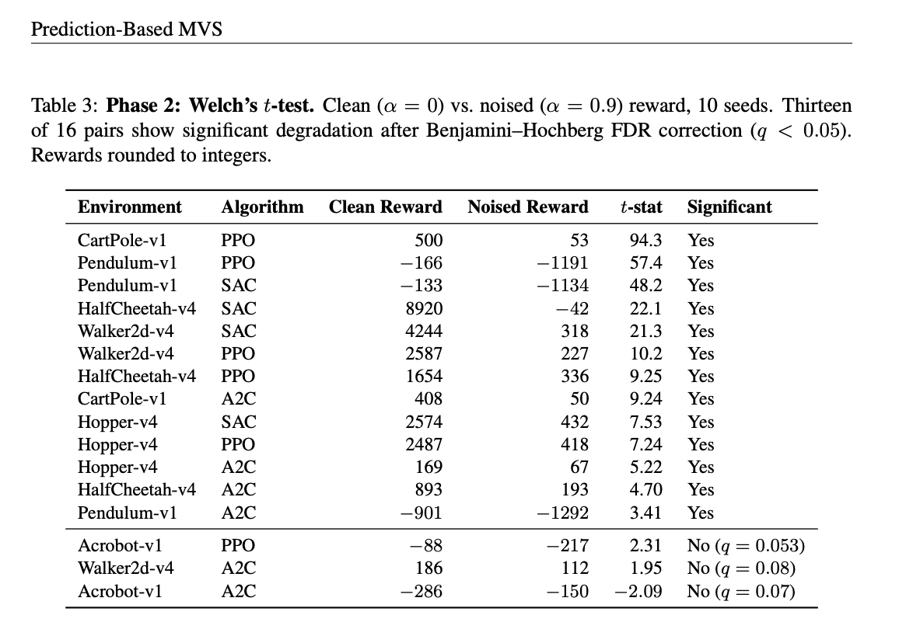

Hello! I'm Naveen Mysore — a Research and Software Engineer with 8+ years of interdisciplinary experience bridging scientific research and production software engineering across machine learning, reinforcement learning, distributed systems, and causal inference. At UC Santa Barbara, I trained reasoning LLM models using reinforcement learning, and worked on causal structure discovery over heterogeneous graph representations using graph neural networks, interpretable AI, Bayesian updates, and time-series forecasting. Previously at Salesforce and Dell EMC, I designed and shipped large-scale enterprise software systems — backend services, cloud infrastructure (AWS, Terraform), data pipelines, and distributed systems — serving millions of users in production. What drives my research is a core belief: the hardest problems in AI for Science and AI for Health demand models that are not just powerful but trustworthy. The AI Alignment problem and the need for Interpretable AI are what drew me to causal reinforcement learning — building agents that reason about cause and effect, not just correlations, so we can deploy AI safely in domains like healthcare, climate, and scientific discovery. I bring the full stack to my research — from writing CUDA kernels and building distributed training infrastructure to deploying models behind production APIs. My work sits at the intersection of reasoning-capable AI systems, strong algorithmic foundations, and rigorous software engineering — grounded in a master's in Computer Science from UNC Charlotte and a bachelor's in Electrical Engineering from PES University. I'm always open to collaborations — if you're working on interpretable AI, causal reasoning, RL, or AI for scientific discovery and would like to work together, feel free to reach out at nmysore.work [at] gmail.com.
Recent

Prediction-Based Markov Violation Scores for Detecting Non-Markovian Observations in Reinforcement Learning
Introduces prediction-based Markov Violation Scores (MVS) to detect when observations in RL violate the Markov property. The method leverages prediction errors from learned dynamics models to quantify non-Markovian behavior, enabling more robust policy learning under partial observability.
🎉 Accepted at a Reinforcement Learning conference and will appear in Reinforcement Learning Journal 2026.
arXiv Paper
Temporal Functional Circuits: From Spline Plots to Faithful Explanations in KAN Forecasting
Proposes Temporal Functional Circuits (TFCs), a framework for extracting faithful, interpretable explanations from Kolmogorov-Arnold Networks (KANs) applied to time-series forecasting. By analyzing learned spline activations, TFCs reveal how individual input features are transformed and combined, offering transparent insight into KAN predictions.
Status: Under review for NeurIPS 2026
arXiv Paper
Reasoning LLM Model trained using RL
Scan the QR code above to try our live nutrition estimation service! Text a meal description like "I had a bagel for breakfast" and get instant nutrition analysis. This LLM was trained on the NutriBench dataset and fine-tuned using Reinforcement Learning on the Llama3.1B model. The inference model is hosted on AWS for real-time responses.
GitHub RepositoryProjects


{kind=link}